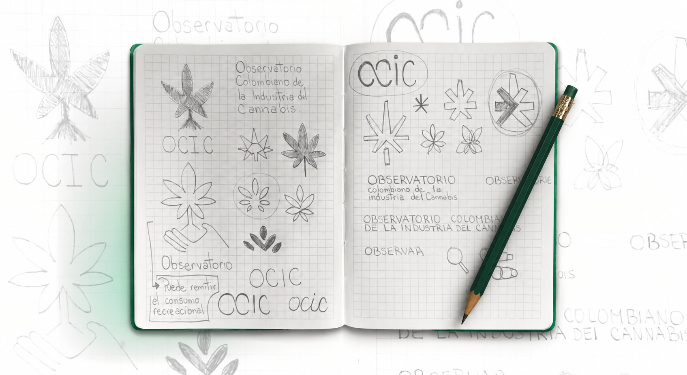
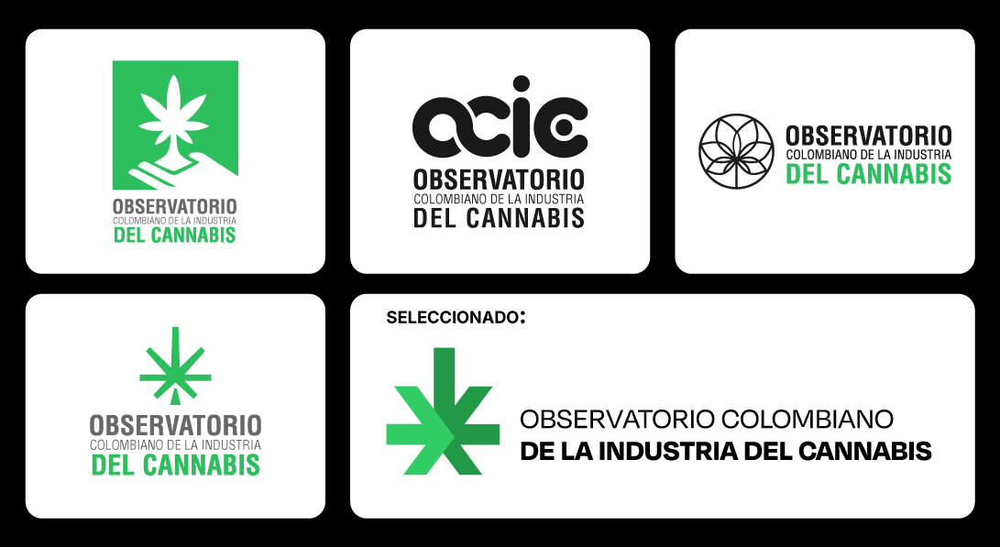
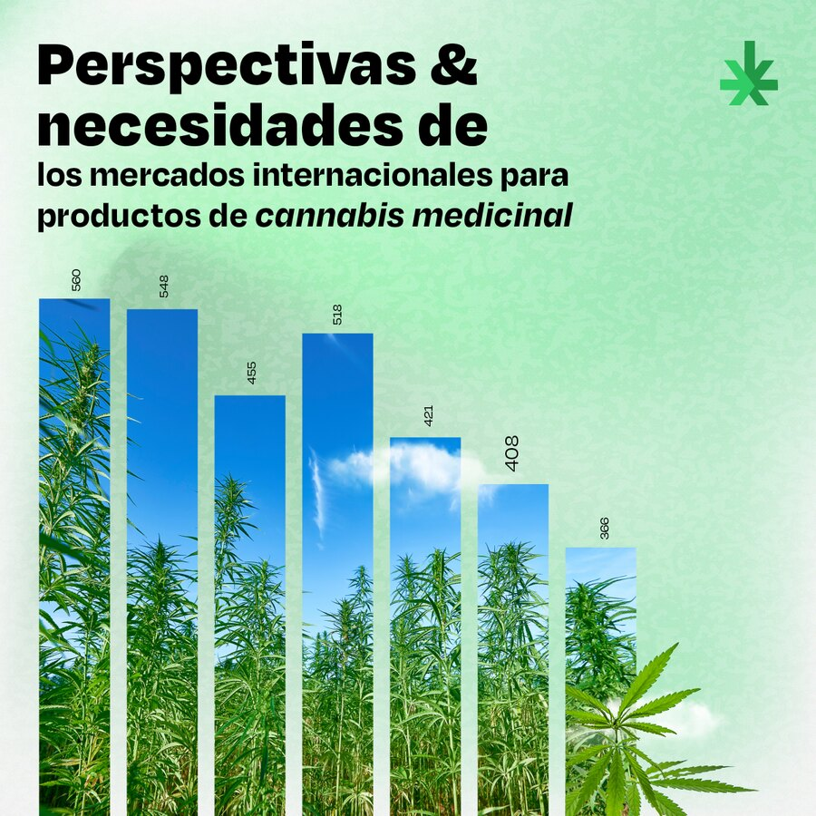
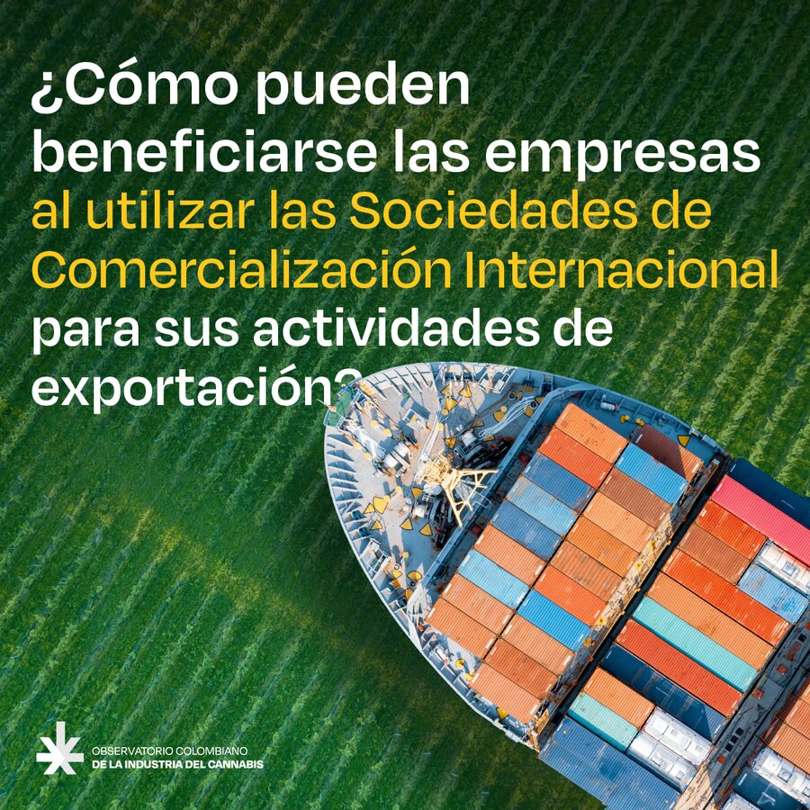
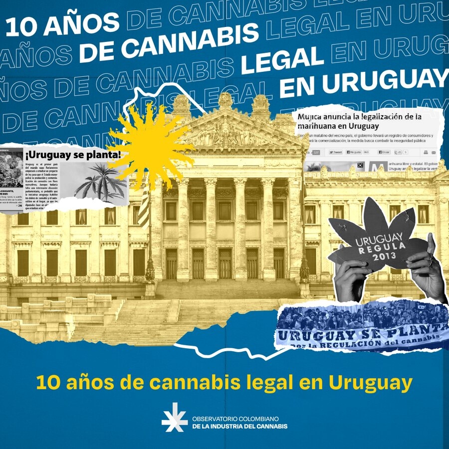
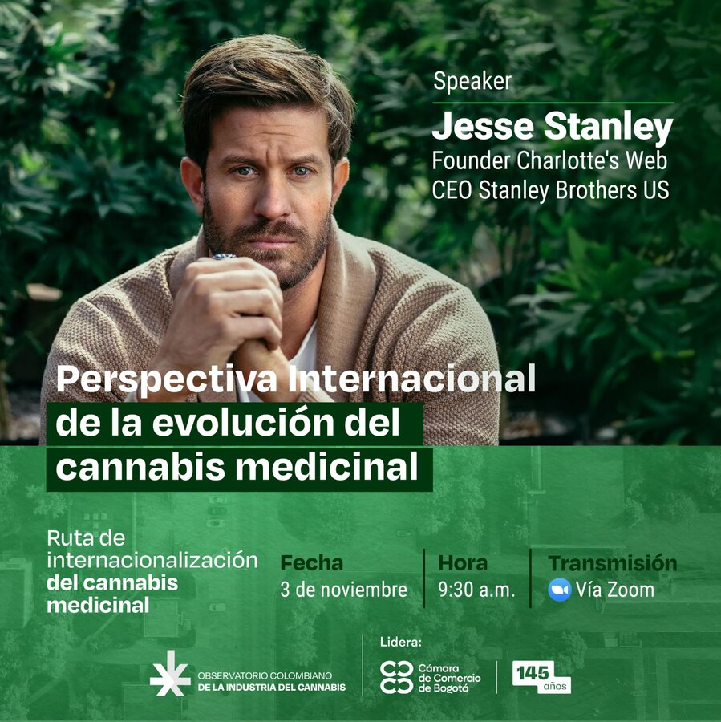
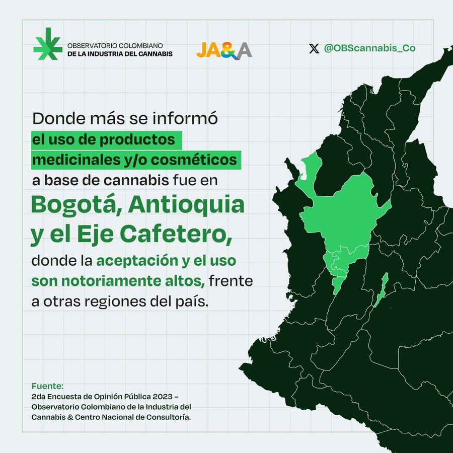
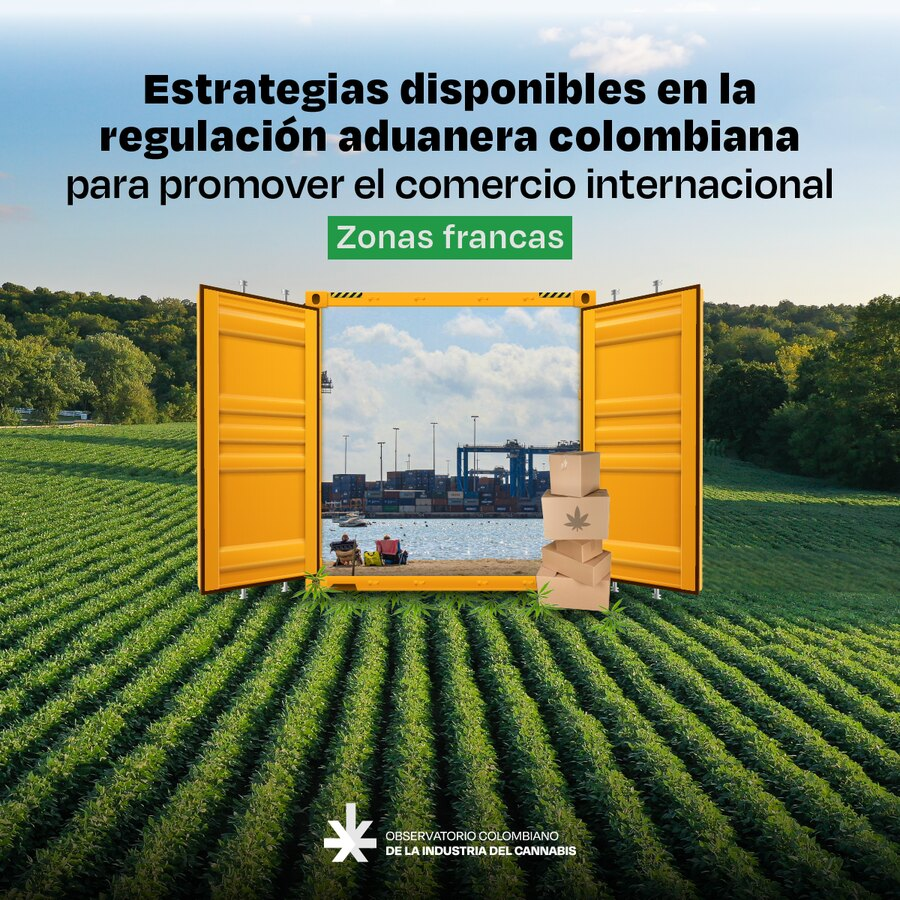

Observatorio Colombiano de la Industria del Cannabis
De los estereotipos del cannabis a una comunicación especializada
El OCIC buscaba posicionar la industria colombiana del cannabis desde su dimensión económica, científica y empresarial. La comunicación debía llegar a públicos muy distintos: inversionistas del sector medicinal, especialistas en exportación y aduanas, médicos, entidades de gobierno y personas interesadas en el tema.
Necesitábamos diferenciarnos de la comunicación asociada al cannabis recreativo y demostrar que el observatorio trabajaba con información, análisis y conocimiento especializado.
La identidad debía, por tanto, alejarse de los códigos visuales del consumo sin perder la relación con el sector.

Bocetos iniciales: exploraciones de símbolo y tipografía para el observatorio.

Propuestas de logotipo y versión seleccionada.
El OCIC nació en 2022, en un momento en que la industria colombiana del cannabis comenzaba a expandirse más allá del cultivo medicinal, hacia la investigación, producción, exportación y desarrollo empresarial. Al mismo tiempo, el debate sobre la regulación del uso adulto llevaba el cannabis a una conversación pública mucho más amplia.
Fui coordinadora gráfica desde sus inicios, trabajando directamente con las especialistas que lideraban el proyecto y desarrollando la identidad y comunicación visual para redes, informes, campañas, eventos y piezas audiovisuales.
Las líderes del proyecto eran expertas en agronegocios y mantenían conversaciones directas con pequeños agricultores y empresarios del sector. Mi trabajo consistió en aprender de ese conocimiento, seguir su dirección sobre el rumbo del proyecto y complementarlo con referencias de medios especializados en cannabis.
Buena parte del trabajo consistió en traducir información técnica y económica en presentaciones, infografías y contenidos digitales que pudieran ser comprendidos rápidamente por públicos diversos.






Una de las decisiones centrales fue establecer una distancia clara frente a los códigos visuales asociados al cannabis recreativo.
No se trataba de ocultar la relación con el cannabis, sino de comunicar que el observatorio estaba abordando el sector desde otro lugar: análisis, regulación, producción, comercio y oportunidades económicas.
Esto llevó a construir un lenguaje visual más institucional y contemporáneo, capaz de adaptarse a información muy diferente sin depender de la representación literal de la planta o del consumo.
Sistema de identidad — logotipo, paleta y tipografía alineados con un lenguaje más institucional y contemporáneo.
También tuve libertad para proponer nuevos formatos de comunicación para redes sociales, además de las piezas informativas habituales. Junto al equipo audiovisual desarrollamos piezas de animación 2D y 3D junto con videos para presentar información económica de una manera más dinámica.
Proceso de construcción del logotipo, de las primeras exploraciones a la marca final.
En lugar de hacer que cada contenido tuviera una solución gráfica completamente nueva, fuimos consolidando un sistema basado en jerarquías claras, fondos limpios y recursos visuales que ayudaran a organizar la información. La identidad y el sistema visual se mantuvieron durante años y se aplicaron a redes sociales, campañas, informes, infografías, eventos y piezas audiovisuales.
Selección del feed de redes sociales del observatorio.
A medida que creció la cantidad de contenidos, el cliente continuó solicitando nuevas piezas y otras personas pudieron producirlas utilizando el sistema existente.
Diseño editorial para informes, infografías y materiales para eventos.
Presentaciones para traducir información técnica y económica a públicos diversos.
El trabajo también permitió llevar la identidad a distintos contextos, desde publicaciones digitales hasta eventos y materiales institucionales.
Línea de animación 2D/3D desarrollada junto al equipo audiovisual.
OCIC fue uno de los proyectos en los que tuve mayor autonomía dentro de Arteaga Latam. Fui construyendo mi comprensión del problema junto al equipo a medida que conocía el sector y sus necesidades de comunicación.
También fue un proyecto en el que aprendí mucho del trabajo en equipo. Trabajé de cerca con un equipo especializado en agronegocios, aprendiendo a escuchar otras perspectivas, incorporar conocimiento que no era propio de mi disciplina y convertir ese conocimiento en un sistema visual que pudiera crecer con el proyecto.